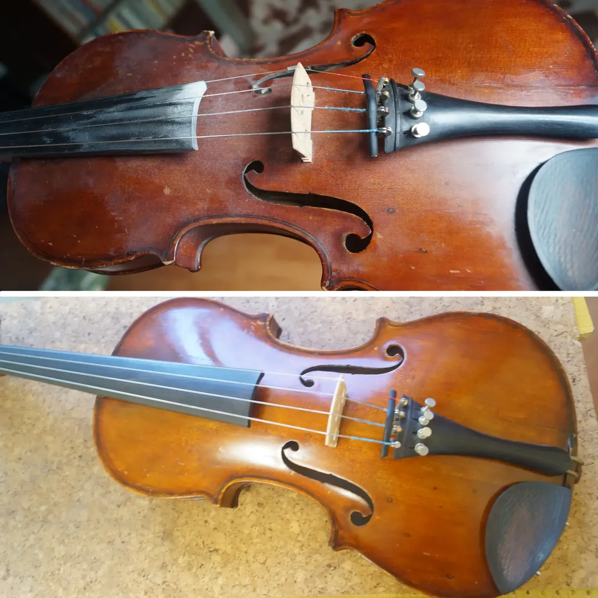

Гитары и народные инструменты
Гитары, домры, балалайки, мандолины.
Ремонт · Реставрация · Настройка
У нас Вы сможете получить квалифицированную помощь и бесплатную консультацию.

Профессиональный ремонт, реставрация и настройка
Гитары, домры, балалайки, мандолины.
Скрипки, альты, виолончели, смычки.
Струнно-смычковые и щипковые.
Для скрипок, альтов и виолончелей.
На любых инструментах.
И решение нестандартных ремонтных задач.
Позвоните или напишите — проконсультирую бесплатно.